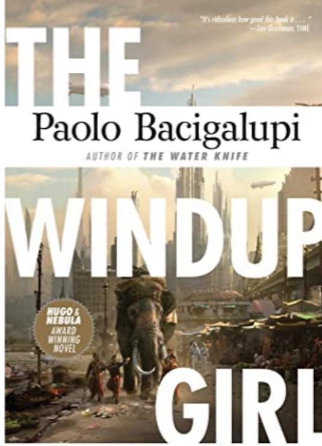

Justice Ann Leckle
An Empire Divided
December 17, 2016 • By Graham J. Murphy
SPACE OPERA has a long and rich history within science fiction, but it has only started to achieve a degree of recognition and respectability over the last few decades.
As David G. Hartwell
and Kathryn Cramer write in their introduction to The Space Opera Renaissance (2007), the star-spanning subgenre “reentered the serious discourse on contemporary SF in the 1980s”
and has since permitted writers “to embark on a science
fiction project that is ambitious
in both commercial and literary terms.” This dual ambition is epitomized in Ann Leckie’s award-winning Imperial Radch trilogy: Ancillary Justice (2013),
Ancillary Sword (2014), and Ancillary Mercy
(2015). Fans, writers, and critics applaud Leckie’s storytelling skills, and listing her impressive collection
of awards and award nominations — including Hugos and Nebulas — would overwhelm this review.
Simply put, the Imperial Radch
trilogy deserves its awards and acclaim. The series is a stunning achievement that belongs on anyone’s “must-read” list, even if they aren’t necessarily
fans of science fiction. Within the trilogy, far-flung star systems comprise the territory of the Imperial Radch,
ruled for the past 3,000 years by the authoritarian Lord of the Radch, Anaander Mianaai,
whose clone bodies and
interstellar gates enable her to achieve a distributed consciousness stretching
across light years. This distributed consciousness is also the source of the empire’s central conflict:
ruling a vast empire is difficult for the Lord of the Radch when “it could take weeks for a thought to
reach all the way across herself,” an inconvenience that proves increasingly problematic when various
parts of herself begin plotting against others. Lord Mianaai is quite literally at war with herself
over the future of the Radch; this schism results partially from her own conflicted feelings about an
insurrection by the Garsedd
star system that ended in the utter destruction of Garsedd and its people,
triggering Lord Anaander Mianaai’s internal division.
Furthermore, myriad internal and external complications threaten the Radchaai in addition to Lord Mianaai’s
schismatic condition. First, the empire is beset by resistance to the changing shape of the Radchaai military. There are three classes of starship — Justice, Sword, and Mercy — and each ship is commanded by human officers; the composition
of a ship’s crew, however, is an increasing source of tension within the empire. For thousands of years, the crew had been largely comprised of ancillaries, corporeal extensions of a ship’s central Artificial Intelligence (AI) arranged hierarchically
into units under a human commanding officer. In the years prior to the main events of the first novel, however, the Imperial Radch has moved away from ancillaries in favor of human crews. This decision fuels divisions within the military as
an increasingly emboldened contingent seeks to abandon human crews and return to the more profitable (and brutally exploitative) ancillary system, which depends upon the conquest of new worlds to harvest the bodies that become enslaved as
ancillaries to the Radchaai ship systems. Second, alien threats like the Geck and the Rrrrrr from outside Radchaai space perpetually haunt the empire, but it is the Presger — a vicious and unstoppable species that has defeated the Radchaai
in every previous encounter — who are the greatest concern. Although the Presger never actually appear in the series, they conduct their business through envoys or operate behind the scenes. It is the Presger, for example, who not-so-secretly
supplied the Garsedd with powerful weaponry to mobilize their failed rebellion against the Radch. Although a truce keeps the Presger from declaring all-out war, there is ongoing speculation that the Presger are directly or indirectly responsible
for provoking Lord Anaander Mianaai’s internal schism, which ultimately leads to the Radchaai civil conflict. The adventures of a former ancillary known as Justice of Toren One Esk Nineteen (who simply calls herself Breq) serve as the narrative
heart of the series. Threats to the Radchaai empire are intensely personal for Breq: she spent most of her life as an ancillary, but her greater self, Justice of Toren, has been destroyed by one version of Anaander Mianaai in a strategic
move against another; all that is left to fuel Breq is her rage at every version of the Lord of the Radch. The first book in the trilogy, Ancillary Justice, opens 19 years after Justice of Toren’s destruction: Breq is on the planet Nilt
searching for Arilesperas Strigan, a doctor who hides an unregistered Presger gun in her possession — one that can easily penetrate Radch personal armor and ship shielding. Before Breq can find Dr. Strigan and the gun, however, she stumbles
across Seivarden Vendaai, beaten and unconscious in the snow outside a local tavern. Seivarden served with Breq as a lieutenant on the Justice of Toren over 1,000 years earlier until she was promoted to captain the Sword of Nathtas: this
was a disastrous posting that saw the Sword of Nathtas destroyed and Seivarden trapped in a stasis tube for a millennium. Seivarden is now a shadow of her former self, a temporally displaced officer addicted to kef whose life is wasting
away. And, much like Breq, Seivarden finds the current Imperial Radch largely inhospitable: “You lost your ship,” Breq explains to Seivarden. “You were frozen for a thousand years. You wake up to find the Radch has changed — no more invasions,
a humiliating treaty with the Presger, your house has lost financial and social status. No one knows you or remembers you, or cares whether you live or die.” Breq could just as easily be talking about herself; she too is lost in an empire
she no longer recognizes. Pairing Breq and Seivarden in Ancillary is key to the former ancillary’s humanization.
As Justice of Toren
One Esk Nineteen, Breq was part of a localized distributed consciousness with access to a vast body
of knowledge, but as a displaced survivor of the destruction of her larger self, she experiences herself as a vastly diminished entity. Breq’s story throughout the trilogy involves balancing her quest for vengeance with an exploration of what
it means to be human. Breq is a relatively flat protagonist, which shouldn’t be surprising considering she is a lone segment of a powerful AI trapped in a human body; as a result, her feelings often struggle against the cold equations of the
artificial logic that once governed her existence. Breq can be an off-putting character at times, demonstrating minimal levels of emotional warmth, although she warms up considerably as the trilogy continues. Seivarden helps to thaw Breq out
of her isolationism: for reasons unknown even to the former AI segment, Breq bonds with Seivarden, and in so doing, she slowly learns about her own humanity, particularly when Breq risks her life and incurs a leg injury to save Seivarden from
a fall off an ice bridge. As Ancillary Justice draws to a close, Seivarden has developed a fierce loyalty to Breq, all the while unaware that Breq is the last remaining segment of Justice of Toren. This loyalty remains unwavering throughout
the remaining two books, particularly in Ancillary Mercy. At the same time, Breq develops a sense of responsibility for Seivarden. This relationship between two broken characters allows Leckie to explore questions of identity, loyalty, and
addiction. Over the course of the trilogy, the two slowly piece their lives together, and although Breq is stronger in handling her fractures, they both come to rely upon one another in unexpected ways. Ancillary Justice
also introduces key narrative strategies that help explain why the Imperial Radch trilogy has achieved its stunning success. First, Leckie refuses to allow biological sex to dictate characterization or unduly influence our reading practices.
The Radchaai language doesn’t differentiate sex or gender, so Breq makes no distinctions; at the same time, the narrative refers to everyone largely as she and her regardless of biological sex. In a blog entry reposted on the Virago website,
Leckie admits she didn’t mean to examine how the use of gendered pronouns shapes our thoughts about the people around us, really I didn’t. But then, isn’t that one of the things science fiction is for, what it excels at? Imagining strange
and unfamiliar worlds, that maybe give us a new and interesting way to think about our own? The use of a universalizing
she
as the default pronoun throughout the series, Leckie explains,
suddenly made the fact that there was a
default visible. The thing about defaults is, they’re automatic. Most of the time you don’t even think about them. They just seem quite obvious and natural. Using an unusual default, particularly one that’s close to but not exactly like the
usual one, really highlights the fact that there’s a default there to begin with. These “default moments” are particularly notable when Breq is communicating with someone whose language makes gender distinctions and she struggles to find
the correct designation. For example, Breq looks at a bar patron on one world and deduces the following: She was probably male, to judge from the angular mazelike patterns quilting her shirt. I wasn’t entirely certain. It wouldn’t have mattered,
if I had been in Radch space. Radchaai don’t care much about gender, and the language they speak — my own first language — doesn’t mark gender in any way. This language we were speaking now did, and I could make trouble for myself if I used
the wrong forms. It didn’t help that cues meant to distinguish gender changed from place to place, sometimes radically, and rarely made much sense to me. Although there are subtle cues attached to some characters that readers can use to figure
out biological sex, it is largely a wasted endeavor: the use of a universal feminine pronoun becomes entirely normalized in a trilogy that offers striking challenges to gender norms and assumptions, even if the novel isn’t directly about
sex and gender. The second narrative strategy depends on what a distributed consciousness allows Leckie to do vis-à-vis point of view and narrative voice. The Imperial Radch trilogy is essentially a first-person narrative, but Leckie repeatedly
employs the freedoms associated with third-person narration, particularly in Ancillary Sword and Ancillary Mercy. For example, at the end of Ancillary Justice, Breq has manipulated one version of Mianaai to secure not only a ship but
also a significant military posting, which takes the now Fleet Captain Breq Mianaai to Athoek Station, the setting for the bulk of Ancillary Sword and Ancillary Mercy. Having connected to Mercy of Kalr’s AI and the Mercy’s crew, Breq
(and the reader) can experience what is happening to members of her crew located anywhere else in the setting, whether in different parts of a spaceship, on different spaceships or space stations, or even off-planet. These at-times-jarring
shifts in points of view unashamedly make demands upon the reader’s attention, but those demands are well worth the effort: they provide a narrative scope that remains grounded in the experiences of its protagonist while offering Leckie the
luxuries (and advantages) afforded to a third-person perspective. The events in Ancillary Sword (and Ancillary Mercy) also open the series up to sociopolitical considerations that Ancillary Justice only hints at. Annexation by the Imperial
Radch represents imperialism in its most brutal form: systems have been forcibly inducted into the Radch empire, and “uncivilized” elements — such as opposing military forces, rabble-rousers, and anyone who might cause friction — have been
converted into ancillary drones in service to the empire. Annexations and ancillaries have been phased out, but the strong contingent of Radchaai who yearn for the practices of yesteryear believe the empire has consequently grown weak. Only
a strong empire, they argue, can defend itself against such dangerous forces as the alien Presger, should the marauding aliens ever decide to break their treaty. At the same time, an economic dimension surrounds annexation and ancillary bodies:
“Expansion, annexation” as one Mianaai explains to Justice of Toren One Var, is very expensive. Necessary — it has been from the beginning. From the first, to surround the Radch itself with a buffer zone,
protecting it from any sort
of attack or interference. Later, to protect those citizens. And to expand the reach of civilization. […] To pay for the previous annexations. To provide wealth for Radchaai in general. The civil war between different factions within Anaander
Mianaai is therefore a complex ideological battle that includes interstellar economics, objections to annexations and ancillaries, imperial defense from opposing alien forces, and moral schisms that collectively provide Leckie the opportunity
to theorize on the legacies of imperialism and strategies of postcolonial resistance. Just as speaking of a supposedly “postcolonial” national context is problematic for indigenous peoples living under the ongoing legacy of colonial occupation,
so too is the continuing operation of imperial power an ongoing topic in Ancillary Sword and, to a lesser extent, Ancillary Mercy. Ancillary Sword can be divided into roughly two sections: the first involves internal conflicts that greet
Fleet Captain Breq Mianaai when she arrives at Athoek Station; the second involves worker exploitation and labor disputes on the planet Athoek. “Theoretically, when the Radchaai annexed a world,” Breq explains, “ethnic distinctions became
irrelevant. Reality was messier.” A flashback in Ancillary Justice touches on this messiness: conflict erupts between the Tanmind and Orsians on the planet Shis’urna. Serving under Lt. Awn, Justice of Toren One Esk Nineteen observed firsthand
the legacy of imperial occupation as the Tanmind repeatedly tried to curry favor with the Radchaai at the expense of the Orsians, going so far as to hatch a plot with Mianaai involving a secret cache of weapons: this was a small cog in the
larger civil war, but it was the one responsible for the Justice of Toren’s destruction. Breq’s arrival on Athoek Station, however, plunges her even deeper into the ethnic divisions that structure the quotidian realities of those living
under the aegis of empire. Much like the Tanmind at best grudgingly tolerated the Orsians in Ancillary Justice, the Xhai on Athoek Station have little patience for the Ychana who reside chiefly in the station’s Undergarden, a deliberately
unsupervised forested area barely tolerated by the station’s administration. Breq begins to overhaul the station and tries to revitalize the Undergarden, actions which inflame Xhai prejudice and fuel Ychana resentment toward administrative
overseers who govern from a distance. Breq tries to placate the divisive parties, but ethnic hatred runs deep, and in these moments there emerges an exploration of just who qualifies as a citizen in an empire where ethnic conflicts are tolerated,
if not exacerbated, by imperial authorities. The flames of prejudice are further stoked when Breq travels downwell to Athoek. Breq learns firsthand about socioeconomic exploitation and elite privilege in her dealings with the prominent and
wealthy Citizen Fosyf Denche and her out-of-control, spoiled clone-daughter Raughd, a Hilton/Kardashian/Jenner-style braggart who becomes the target of an assassination plot. The Denche family wealth is rooted in the harvesting, processing,
and distribution of some of the most rarefied tea in Radchaai space, and, much like the spices of Frank Herbert’s Dune, tea is a valuable commodity worth fighting over. Breq learns firsthand about the substandard living conditions for those
laborers toiling in the plantation fields: There also shouldn’t have been such a sharp separation between the outdoor servants — all Valskaayan as far as I’d seen this morning and the day before — and the indoor, all Samirend with a few Xhais.
Valskaay had been annexed a hundred years ago, and by now at least some of the first transportees or their children ought to have tested or worked their way into other positions. Breq is quickly brought up to speed regarding the impossible
expectations for workers on the Denche plantation when she is bluntly told “no one’s going to stay picking tea if they can get away from it. Field hands are paid based on meeting a minimum weight of leaves picked. But the minimum is huge —
it would take three very fast workers an entire day to pick so much.” Breq is gradually educated on worker exploitation and indentured slavery, organized work stoppage, and the creation and mobilization of workers’ unions. All the while, she
attempts to untangle the Raughd assassination plot and keep abreast of diverse mysteries on Athoek Station, including a weird Ghost Gate that leads to an apparently empty sector in space, an ancient Notai artifact that emerges from the Ghost
Gate, a human trafficking network that finds Valskaayan workers simply disappearing from Athoek, and, strangely enough, a beautiful tea set whose origins connect all these mysteries. While these enigmas will eventually tie into the Mianaai
conflict, Ancillary Sword emerges as a powerful treatise about today’s global socioeconomic conditions, making it the most overtly political (and, for my tastes, the most satisfying) of the three novels. In our current age, where the legacies
of imperialist colonialism continue to perpetuate socioeconomic disparities, worker exploitation, and concerted union busting, Ancillary Sword may be the most pertinent novel of the three. At the same time, Ancillary Sword is also the
only novel in the trilogy that includes certain narrative disappointments. Breq has entirely personal reasons for going to Athoek Station: her former commanding officer Lt. Awn’s younger sister, Basnaaid Elming, serves as a Horticulture expert
on Athoek Station, and Breq has a profound desire to reach out to her. As the events in Ancillary Justice reveal, Justice of Toren and all its ancillaries have been unknowing pawns in the Mianaai civil war. In the flashback to Shis’urna,
Justice of Toren One Esk Nineteen slowly realizes the extent of this civil war when she learns of discrepancies in her AI’s official log, witnesses a mass execution, and (aboard the Justice of Toren in her ancillary form of One Var) murders
Lt. Awn on Mianaai’s orders shortly before the ship itself is destroyed. As the surviving ancillary, Breq seeks out Lt. Awn’s sister on Athoek Station to confess her sins and achieve some kind of absolution (or punishment) for her actions.
Ancillary Sword, however, offers a largely unsatisfying resolution to a potential Breq-Basnaaid confrontation. The tension never attains the necessary gravitas, and forgiveness comes relatively easy to Breq when she saves Basnaaid’s life
during a later skirmish aboard the space station. Ancillary Sword sets up a Breq-Basnaaid conflict, but it ultimately fails to deliver. However, the relationship Breq forms with Lt. Tisarwat throughout the novel more than makes up for this
shortfall. Lt. Tisarwat mirrors Seivarden’s role from Ancillary Justice, although her problems are more familiar to Breq than Seivarden’s drug recovery and confidence issues. Mianaai attempts to spy on Breq by turning the newly promoted
Lt. Tisarwat into an ancillary, erasing her personality and consciousness as a consequence. Breq quickly suspects Mianaai’s treachery and frees Tisarwat from Mianaai’s control, which leaves Tisarwat in a similar predicament to Breq: she too
was once part of an expansive mind, but now the lowly Tisarwat must struggle with her diminished state while simultaneously trying to reconnect with those parts of her that may have survived the ancillary conversion process. As with the Breq-Seivarden
relationship in Ancillary Justice, the Breq-Tisarwat relationship in Ancillary Sword offers layers of depth for Breq’s growing humanity, although Tisarwat is more than simply a replacement for Seivarden. Tisarwat acts as a strong secondary
character, and in setting up a makeshift embassy in the Undergarden on Athoek Station, she is instrumental to bridging the ethnic conflicts aboard the station that Breq wasn’t able to reconcile. As Ancillary Sword and Ancillary Mercy show,
Tisarwat embodies the hope that ages-old ethnic divisions can be negotiated and reconciled, although such reconciliation will be extremely difficult, require significant work, and entail personal cost. As befits the final book in the trilogy,
Ancillary Mercy bears the difficult task of drawing the overall story to a satisfying close. The commendable conclusion pulls together the competing plots and subplots while introducing new characters, such as a new ancillary from the other
side of the Ghost Gate, and intensifying the Mianaai schism. This conflict escalates when a third aspect of Lord Anaander Mianaai sets her sights on Breq in her own thirst for vengeance. This version of Mianaai is quite unlike her clone sisters
and remains relatively underdeveloped, defined almost exclusively by her thirst for Breq’s blood, but Ancillary Mercy features an exciting interstellar confrontation between Breq’s Mercy of Kalr and several Sword-class ships whose weapons
grossly outmatch a Mercy’s ordnance. Ancillary Mercy brings its share of casualties and embodies what fans of space opera have come to expect from this subgenre, but it also takes time to engage in an Asimovian-style debate about the Frankenstein
complex and whether Artificial Intelligence entities should be untethered and allowed to live free from their programmed loyalties to the Radch empire. This important debate within the confines of the narrative helps to turn several tides
in the ensuing conflicts. In lesser hands, Ancillary Mercy might collapse under the weight of all its moving pieces, but in a testament to Leckie’s narrative prowess, she is able to maintain stunning coherence amid all these elements and
drive Ancillary Mercy to a wholly satisfying conclusion. In a wonderful metafictional (non-spoiler) moment, the final chapter of the book begins thus: Entertainments nearly always end with triumph or disaster — happiness achieved, or total,
tragic defeat precluding any hope of it. But there is always more after the ending — always the next morning and the next, always changes, losses and gains. Always one step after the other. Until the one true ending that none of us can escape.
But even that ending is only a small one, large as it looms for us. There is still the next morning for everyone else. For the vast majority of the rest of the universe, that ending might as well not ever have happened. Every ending is an
arbitrary one. Every ending is, from another angle, not really an ending. Ancillary Mercy is simultaneously an ending and not an ending. It provides a degree of closure on a stellar trilogy whose immense scope awaits (even demands) further
explorations, which we’ve already started to see in such short stories as “Night’s Slow Poison” (2012), “She Commands Me and I Obey” (2014), and at least one forthcoming novel, due for release in the fall of 2017. The Imperial Radch trilogy
is thoughtful, exciting, well paced, fascinating, and awe inspiring in its narrative intricacies. It exemplifies not only what the best space opera can achieve, but also the best of what science fiction can offer. ¤ Graham J. Murphy is a
professor with the School of English and Liberal Studies at Seneca College.
Did you know LARB is a reader-supported nonprofit
LAR publishes daily without a paywall as part of our mission to make rigorous, incisive, and engaging writing
on every aspect of literature, culture, and the arts freely accessible to the public. We could not do this work without the support of our readers and members. If you enjoyed this article, please consider joining as a member or making a one-time
donation today. Thank you! GIVE TODAY!
Graham J. Murphy
Graham J. Murphy is a professor with the School of English and Liberal Studies at Seneca College, teaching courses in science fiction, utopianism, and young adult dystopias.
His most recent publications include “For Love of Country: Apocalyptic Survivance in Ambelin Kwaymullina’s Tribe Series” for Extrapolation’s special issue on Indigenous Futurism, and an essay on Vandana Singh for the forthcoming collection
Dis-Orienting Planets: Racial Representations of Asia in Science Fiction. He is co-editor (with Sherryl Vint) of Beyond Cyberpunk: New Critical Perspectives and has been published on numerous occasions. Ongoing research includes a co-edited
anthology on cyberpunk in visual media, including an essay focusing on subnatural insects in BOOM! Studios’s comic book adaptation of Philip K. Dick’s Do Androids Dream of Electric Sheep?, as well as other cyberpunk- and/or insect-related
projects in various stages of development. LARB CONTRIBUTOR
RECOMMENDED
This is Science Fiction?
Who ended up in Jeff and Ann VanderMeer's "The Big Book of Science Fiction"?...
Labors of Hope and Liberation: Nisi Shawl’s Steamfunk Novel “Everfair”
By reimagining the past, Nisi Shawl’s steamfunk
novel “Everfair” soars towards a feminist, afrofuturist vision of liberational technology.... The Bill Hodges Trilogy, or, Timing is Everything
Patrick McAleer looks at the coincidences and pleasures of Stephen King’s Bill Hodges trilogy....
Finding Silence: Indra Das’s “The Devourers”
The experience of reading Indra Das’s “The Devourers” novel is like watching a surrealist film: it is poetic, playful, and at times miraculous...jdjjdlddj
>

The paolo Bacigalupi
Dystopian fiction often assumes that in the future sexism and racism will be figured out. Just look at The Hunger Games.
Katniss is never questioned for being a badass woman with a powerful bow. The riots that are so racially tense
in the film–echoing disturbing images of plantation slaves–are not explicitly about race in the books. I find it rather naïve to believe that humanity will progress so far in terms of gender and racial equality only to succumb to a big government
that tamps everyone’s rights. History shows that this is not how dictatorships work. Equally frustrating is how rarely dystopian fiction, and sci-fi in general, goes beyond white, Western experience. Even if the United States remains a superpower
and American corporations continue to dominate much of the market, the rest of the world will continue to exist. Fiction needn’t ignore that. Imagine my joy when I discovered The Windup Girl by Paolo Bacigalupi. Masquerading as a sci-fi
thriller, Bacigalupi’s fantastic debut is actually a big issues novel.
It is an intelligent book, political without being polemical. Beautifully written, it neatly folds complex ideas about gender, race and ethnicity into the plot without
giving solutions, acknowledging that in a broken future there’s no reason to assume that our understanding of one another will be any less broken. The novel takes place in Thailand a couple centuries from now. Genetically modified fruits
and vegetables are the only kind available, the word “natural” has lost all meaning, calorie companies control the global food market, gas-fueled vehicles belong only to the mega-wealthy or the military, and electricity is provided by spring-based
power and the transfer of kinetic energy. Thailand is one of the last bastions of independence from the American calorie companies, corporations whose aggression and power echo today’s tobacco and oil industries. The issues of climate change,
ecology, and the future of humanity’s food and energy are central to the novel.
Bacigalupi throws the reader into a world where cheshires, chameleon-like genetically engineered cats, roam the streets, feed on the dead, and breed like bunnies,
and megodonts, elephant-like creatures, fuel factory energy. U-Tex rice, engineered in Texas and shipped around the world, is a dietary staple, and two Thai governmental bodies, Trade and Environment, are at war. The greedy Trade Ministry
is eager to open the city to foreign markets while the cautious Environment Ministry (equally greedy but working on the smaller local scale of endless bribes) enforces borders in order to prevent the spread of mutated epidemics that ravage
food. Bacigalupi reminds us that the food so many of us take for granted is human fuel, literal energy to be consumed and used. Food is as intimate to us as our bodies, and Bacigalupi paints a future in which it is not only scarce, but downright
dangerous. Besides the powerful ecological criticism that Bacigalupi brings to the fore, he gets at gender, race, and the very meaning of being human. Of his main characters, only one, arguably the villain of the piece, is white and Western.
The rest are Thai (Jaidee Rojjanasukchai, Kanya), Japanese (Emiko) or Chinese (Hock Seng). This is refreshing in and of itself, but what is better is that these aren’t empty symbols of diversity, but rather complex characters with shifting
agendas, desires, and vulnerabilities. If there is one thing that Bacigalupi does best – and he does a lot of things very, very well – it is creating truly three-dimensional characters whom I found myself rooting for, identifying with, and
sometimes despising. Particularly important is Emiko, the windup girl of the title.
Invented by Japanese scientists, New People, or windups, are genetically engineered creatures grown in test tubes and trained from birth to be obedient
to their owners.
Some are easy to identify as biological machines: the “ten-hand” workers who tend the fields of Japan, for example. Some are dangerous, like the military grade windups fighting in Vietnam or the windup attack hounds. And
some are merely beautiful, useful heechy-keechy, as they’re derogatorily called by the Thai. Emiko belongs to this last category. With genes encoded with the need to serve and obey, she was once owned by a Japanese businessman who brought
her to his bed and told her not to be ashamed of who she was. Then he abandoned her in Thailand. She might have been better off being mulched.
Her kind are not only looked down on, they are illegal in Thailand, and while she looks human,
her movements are “stutter-stop flash-bulb strange” and visibly mark her as a windup.
If she moves very slowly, concentrating all the while, she can achieve smooth gestures, but otherwise she is a tick-tock creature designed to never be
mistaken for a “real” human. Predictably, perhaps, the only place a New Person like Emiko can survive is in a brothel, where men pay good money to watch her beaten and raped by another prostitute, an act she performs night after night.
They
pay even more, if they dare, for the gauche and kinky experience of sleeping with her.
When Emiko is first introduced, it is clear her body is not hers to control. She is genetically programed to orgasm and so she climaxes onstage for
her audience, even as tears leak from her eyes and her contorted limbs ache. Her perfect skin is smooth because it lacks pores, and so, because she cannot sweat, Emiko overheats, a further parallel between her and simple machines. But, like
humans, Emiko feels, thinks, eats, and shits. Though Thais believe Emiko doesn’t have a soul, Bacigalupi voices her thoughts, her psyche, her instincts, and her need to rebel. Except for her physicality, it is impossible to distinguish between
her and a human. Does Emiko represent another race? Another species? A new kind of human or a very intelligent machine? Racial parallels are inevitable; prejudice requires viewing the Other as less than human. Emiko embodies this complicated
idea by being human-created rather than human-born, and she does so in a world fraught with tension between Thais, Chinese refugees and Americans. In other words, Bacigalupi doesn’t spoon-feed some false racial dichotomy, nor does he shy away
from confronting his readers with the twisted logic that fuels racist behavior. Fear is the emotion that Emiko ultimately raises in others, especially after she sets herself free by discovering that despite her training, she can disobey and
even harm those who have hurt her